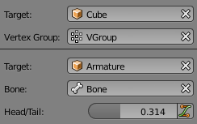

数据块菜单¶
一组用于关联 数据块 的菜单按钮。数据块如如网格、物体、材质、纹理，等等。被关联的数据块编辑之后，会同步更新到所有用户。

可搜索输入的数据块菜单。
- 类型
显示图标以指示数据块类型，单击打开后弹出下拉菜单。数据块可以使用拖拽操作，如将材质拖拽到3D视图某一物体上方或者直接拖拽到 数据ID 框。
- 列表
- A list of data-blocks available in the current blend-file, or a link to select an item from. The menu may show a preview besides the items and a search box to search the items in the list by name.
- 名称
- Displays the internal name of the linked Data-Block, which can be edited as a regular text field. If a name is already assigned, Blender will add a digit to the name like ".001".
- 用户数
- Displays the number of users of the data. Clicking on it will make it a single-user copy, with it linked only to the active object/object's data.
- 伪用户
F - 即使该数据块没有真正用户，也会随blend文件一起保存。
- 新建/添加
+ - 新建数据块，或者复制当前数据块并应用。
- 打开文件
- 打开 文件浏览器 。
- 解包文件
- 将当前文件打包的文件 解包 为外部文件。
- 取消关联数据块
X - Clears the link.
Shift-LMBto set the users to zero allowing the data to be fully deleted from the blend-file.
有时需用到一 列 数据块 (如对一个物体使用多个材质)。
See also
数据系统章节 有关于数据块更深入的介绍。

数据ID¶
数据ID。
数据ID是左侧带有图标的文本框，单击显示灰色下拉菜单。用于选择名称引用数据块。
- 类型
- 左侧的图标指示接受的数据了类型。
- 名称
- 文本框带匹配搜索功能。使用
Tab自动补全为匹配的名称。如果存在多个匹配项，需继续输入。如果用户输入非法名称，则该值不会变化。 - 列表
- 用于直接选择数据块。
- 吸管
- 一些数据ID框右侧带有 吸管工具 。
- 删除
X - 单击右侧的
X按钮删除饮用对象。
子ID¶

- 顶点组
- If the selected object in the Name field is a mesh or a lattice, an additional field is displayed where a vertex group can be selected.
- 骨骼
If the selected object in the Name field is an armature, a new field is displayed offering the choice to specify an individual bone by entering its name in the Bone data ID.
- 头/尾
选定骨骼后，会显示数值输入框，用于选择指向头端或尾端。滑块用于指定该点沿骨骼轴向插值位置。0表示指向骨骼头/根部，1表示指向尾/尖端。
- 使用软骨骼形状
- 如该骨骼为 Bendy Bones 软骨骼 ，单击此按钮，使该点使用头尾之间B样条曲线曲率。